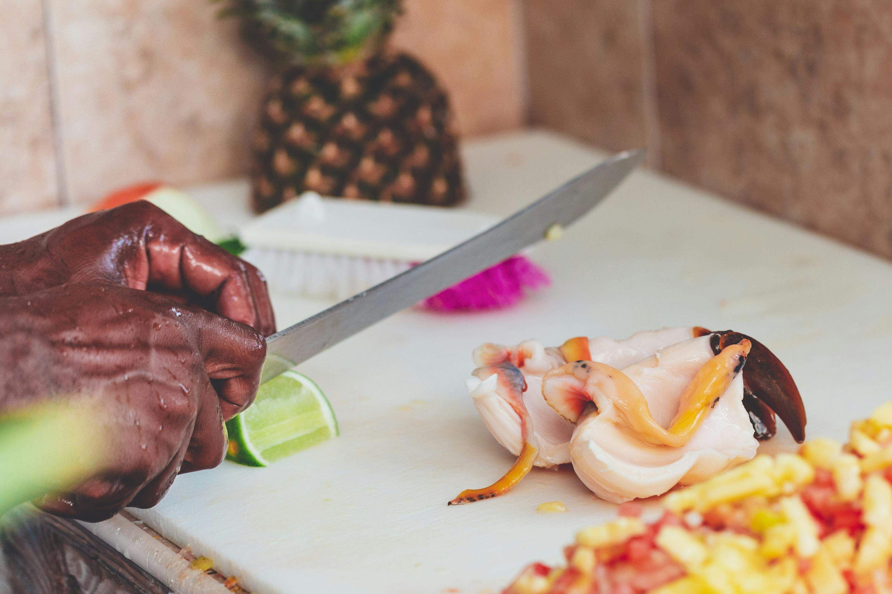

Top Attractions in Nassau
Nassau Beaches
Enjoy Nassau's stunning beaches, such as Cable Beach and Paradise Island Beach. Perfect for swimming, sunbathing, and water sports.

The Atlantis Resort
A world-famous resort offering luxury accommodations, water parks, aquariums, and an array of entertainment options.

Nassau Food and Culture
Shop for handcrafted Bahamian goods at this vibrant market. A great place to find unique souvenirs!
